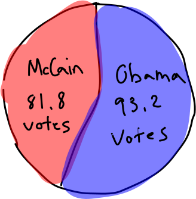
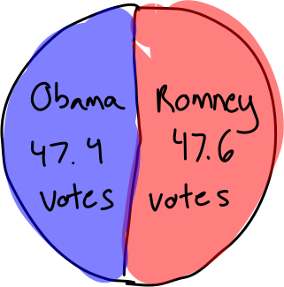
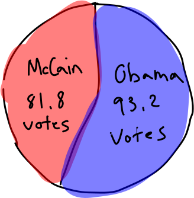
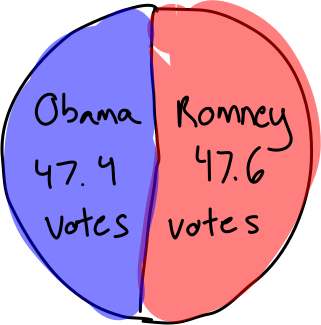
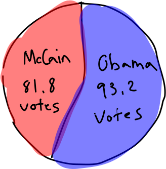
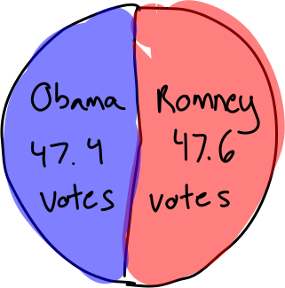

Each election cycle, candidates campaign to various states to try and appeal to voters from across the
country.
But how much of that actually matters? Are there any patterns that we can identify?
Can we use past campaigns to predict election winners?
Methodology
To answer these questions, we looked at every single campaign visit
for the past five elections. For transparency, we defined campaign
visits as "any public, in-person appearance apparently organized
or initiated by the candidates or their campaign, for the purpose
of appealing to a localized concentration
of voters".
Included:
Excluded:
Public Rally
Local Meeting
Town Hall
Debate
Private Fundraiser
National Event
A campaign visit might include a public rally or a town hall,
but doesn't include national events like debates or private events
like small fundraisers.
1,036
Visits
20
Years
32
States
General Insights
In the last six elections, the median population of a Democrat-visited
city has been significantly higher than their Republican counterpart.
Essentially, Democrats campaign in more populated areas.
Conversely, Republicans tend to have more total visits than Democrats,
meaning their visits, though relatively small, are compensated for by
their frequency.
This matches with the demographics that vote for each party:
Democrat support (in each state) comes from a handful of large
cities, whereas Republican votes tend to come from smaller, but more
abundant areas.
Also notice how the total number of visits has generally declined over
time for both parties, presumably as a result of a switch in campaigning to
relatively more valuable online spaces.
Here, the bias that candidates have towards certain states is clearly visible.
Notably, perennial swing states like Florida, Pennsylvania, and Ohio account
for 45% of all campaign visits in the last 6 election cycles.
This is a result of the electoral college, which fails to accurately represent
certain demographics. When both candidates rarely campaign in populous states like
California or Texas, it's indicative that both Republican and Democrat votes
in these states don't matter.
While one could argue that removing the electoral college would result in candidates
solely appealing to a few states, that's essentially what's happening under the
electoral college anyway.
Above is a bubble chart of all Republican-visited cities, sized by the number of visits.
Notice how a large concentration of visits were to cities in Florida, showing the
Republican party's value of the state when campaigning.
Below is the same chart but for Democrats. Here, one can see that the cities that
Democrats visit are generally larger than those visited by Republicans.
The large overlap between visiting cities is once again telling about the
Electoral College: just a few key areas in certain states can decide the whole
nation's fate.
Past Elections
2004 Election
This election featured relatively similar campaigns between
candidates, with Bush having 127 visits and Kerry 113. The above map
might not show this since Kerry tended to re-visit cities, while Bush
went to new locations.
While the number of visits was close, Bush tended to reach a wider
range of people. For instance, in Florida, though both candidates
visited the state 22 times, Bush's visited a total of 20 different cities,
whereas Kerry only visited 11.
We can further expand on the influence of Bush's campaign by comparing
the total populations of all the cities he visited versus the one's
that Kerry visited. Bush campaigned to a total of 3.1 million people in
Florida, whereas Kerry only reached 2.6 million people, a difference that
led Bush to win the state and the election. We'll continue to use this idea of
"campaigning to people"
We're using this as a compromise between biasing to Republicans and Democrats:
if we didn't uniquely count cities, we'd be biasing towards Democrats, since candidates
are more likely to visit more-populated cities, which would inflate numbers. Conversely,
if we were to solely count the number of visits, as indicated in a prior bar chart,
this would bias towards Republicans, who visit more cities.
throughout the rest of our analysis.
The Gainesville Sun | Oct 17, 2004
2008 Election
The 2008 election, between Obama and McCain, is a key example of
how strong campaigning can influence voting results.
Despite fairly close general campaign strategies, Obama outperformed
McCain in terms of the number of people he 'reached' in swing states,
campaigning more than McCain in 5 of the 7 states, and winning 4 of those 5,
giving him the White House.
One of the states in which he out-campaigned McCain was Virginia,
where he campaigned to a total of 1.4 million people, much more than
McCain's 500,000.
Poetically, his final campaign rally took place in Manassas, Virginia, where
he delivered his final speech to a crowd of 100,000 people, an hour
before election day. He would eventually win the state, the first time
a Democrat to do so since 1964.
Rappahannock News | Nov 6, 2008
2012 Election
In 2012, the margins of how many people each campaign visited were extremely
close, so while Romney barely edged out Obama in 5 of 8 swing states, he failed
to win a single one.
Obama, on the other hand, had all 3 of his campaign advantages Obama's
translate to state victories.
There are a number of possible reasons for this oddity, ranging from Obama's
incumbent advantage to Romney, though visiting more people, not genuinely
engaging with them.
Brookings Institution | September 14, 2012
2016 Election
The 2016 election is often a litmus test for how accurate an election model is.
In 2016, the split between candidate visits was nearly two-thirds to one-third:
Trump made 109 visits in 18 different states, while Clinton made 66 in 11 states.
Similarly, Trump visited a total of 27 million people on the campaign trail, whereas
Clinton only visited 11 million.
The difference in campaigning was especially significant in key swing states like
Florida, Michigan, North Carolina, and Ohio, where Trump visited more people than Clinton
and won each state.
2020 Election
It's difficult to evaluate the 2020 election given that it took
place against the backdrop of the COVID-19 pandemic, which is reflected
in the campaign trails of both candidates, with the number of events
for both parties dropping to record lows out of the past 4 elections.
Still, of the actual in-person events, Biden campaigned stronger than Trump,
visiting more people than Trump in key states like Pennsylvania, Ohio, Wisconsin,
Michigan, and Minnesota, eventually winning all but Ohio.
2024 Prediction
*
These predictions were made as of October 30th, 2024
Above is the same map we've seen for each of the previous elections.
As of October 30th, 2024, Harris has had 55 public events, and Trump has
had 62.
As indicated in the analysis of previous elections, looking specifically
at the 'total number of people visited' on the campaign trail, which is
calculated by the sum of the populations of all the different cities a
candidate visits, is our best predictor of election results, looking solely
at our data.
We can increase the significance of our findings by looking into how much a candidate
campaigned more than the other, not just if they campaigned more. To filter out noise,
we'll also only look at swing states in which either candidate campaigned to 200,000
more people than the other, leaving the states that are 'too close' as true toss-ups.
We'll generate a logistic model based on those conditions, assigning win probability values to
each state, and multiplying those values by the state's electoral votes, to find an
expected value of votes for each candidate.
Applying this model to each of the last 5 elections results in accurate predictions
of 4 of them, the sole error being in 2012. That is, our model accurately predicted the
candidate that would win a majority of swing state electoral votes, and thus win the White House
in 4 of 5 cases. Unfortunately, this is not statistically significant, assuming each election is a true 50-50
toss up (p=0.1875), indicating that campaigning in swing states is not the only factor that
allows a candidate to win the election.
Even though the lack of significance of the model is disappointing, it goes to show
that reaching a wide audience and campaigning to a large number of people isn't the only
thing that matters in an election. Ultimately, it's the candidate's messaging and platform
that can truly make a difference, which when combined with solid campaigning numbers, can
lead a candidate to the presidency.
For reference, below are our model's predictions for the distribution of electoral votes
in each election. In 4 of 5 cases, the model correctly predicts the winner.


While it's negligible to apply an insignificant model to a new dataset, we can still attempt to
use our model to predict the 2024 election.
In 2024, the 7 swing states, as defined by our data, are Pennsylvania, Michigan, Nevada,
Wisconsin, North Carolina, Arizona, and Georgia. Extracting the expected values by campaign
visits gives us a split of the 93 swing state electoral votes that yields 48.7 votes to Harris
and 44.2 votes to Trump.
That is, with Harris winning the majority of swing state votes, we predict that
Kamala Harris will win the 2024 election and be the 47th president of the United States.
Keep in mind that this is from an insignificant model, so if this prediction is right
it could just be a broken clock being right twice a day, and if it's wrong, it's just a
broken clock being broken.
Conclusion
To answer the questions posed at the beginning of the page, yes, campaigning does matter,
but it's relative value has decreased over the years. Additionally, there are several
patterns that we can identify, especially across party-lines. Finally, at least in our study,
we cannot use campaign visits alone as a means of predicting election outcomes.
About
Nikhil Chinchalkar
Ella Sanchez
Natalie Miller
Shashank Kalyanaraman
Vivian Guo
Sourcing information and files can be found on our GitHub.


 


